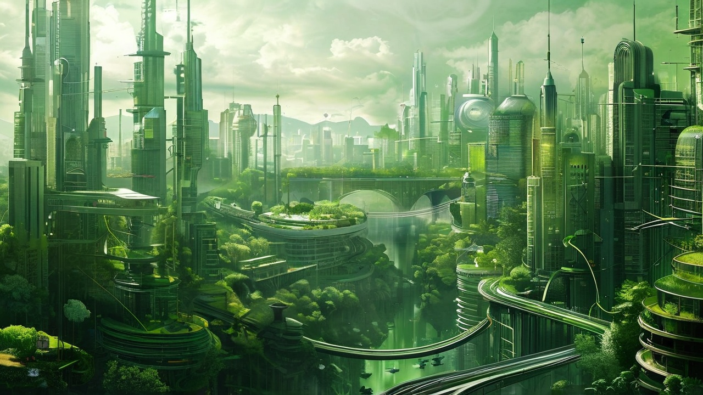
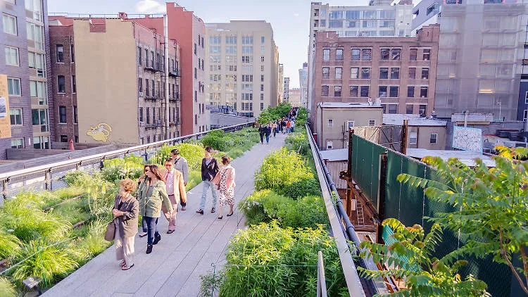
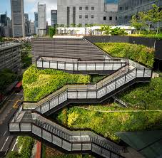

Introduction:
In an age where urbanization continues to rise, cities are often viewed as concrete jungles devoid of nature. However, a quiet revolution is taking place as urban gardening emerges as a vibrant solution to the challenges of city living. From rooftop gardens to community plots, city dwellers are reclaiming green spaces and fostering a connection to nature in their bustling environments. This movement not only beautifies our cities but also promotes sustainability, enhances mental well-being, and encourages community engagement. As we look to the future, urban gardening holds the promise of transforming our metropolitan landscapes into thriving green sanctuaries, bridging the gap between nature and urban life. Join us as we explore the innovations, benefits, and inspiring examples that showcase how cities can cultivate a greener tomorrow.
Innovations in Urban Gardening
Vertical Gardens and Living Walls Vertical gardens, or "green walls," maximize limited space by transforming walls into lush gardens filled with plants, herbs, and flowers. Using hydroponics or soil-free systems, these installations provide a striking visual appeal and offer additional insulation, improving building energy efficiency. Living walls also help purify the air, capturing carbon and releasing oxygen, which is particularly beneficial in densely populated urban areas with limited green spaces.
Rooftop and Balcony Gardens In cities where horizontal space is scarce, rooftops and balconies present unique opportunities for urban gardening. Green roofs not only reduce the heat island effect by lowering rooftop temperatures but also manage stormwater, reducing runoff and preventing urban flooding. Community rooftop gardens can become shared spaces, where residents grow fresh produce, cultivate herbs, and create pollinator-friendly habitats in areas where conventional gardens are impractical.
Smart Gardening with IoT and AI Technology is increasingly supporting urban gardening initiatives. With Internet of Things (IoT) sensors and artificial intelligence (AI), urban gardeners can monitor soil moisture, temperature, and plant health remotely. For instance, hydroponic and aeroponic systems equipped with IoT can automatically adjust watering schedules and nutrient levels, making urban gardening more sustainable and accessible even for those without traditional gardening knowledge.
.png)
Benefits of Urban Gardening
- Environmental Impact Urban gardens act as natural air filters, absorbing pollutants and lowering greenhouse gas emissions. By incorporating green spaces into urban landscapes, cities can offset some of the environmental impacts of urbanization, like pollution and high energy use. Additionally, green spaces support biodiversity by providing habitats for birds, bees, and other pollinators, vital to maintaining ecological balance.
- Improving Mental Health and Well-being Studies have shown that access to green spaces can significantly reduce stress, anxiety, and depression. Engaging in gardening offers a therapeutic escape from the fast-paced city life and fosters a sense of purpose. For those with limited access to parks, rooftop and community gardens provide a chance to unwind and connect with nature, contributing positively to residents' overall well-being.
- Promoting Food Security and Sustainability As urban gardens become more popular, they also play a critical role in addressing food security. Growing produce locally reduces the need for food transport, cutting down on carbon emissions and offering fresher, often organic, options to residents. In neighborhoods with limited access to affordable fresh produce, community gardens provide a sustainable food source that reduces dependency on imported fruits and vegetables.
- Strengthening Community Bonds Urban gardening projects foster a sense of belonging, as neighbors work together to cultivate and maintain green spaces. Community gardens, for example, encourage collaboration and interaction among diverse groups of people, helping to build stronger social ties and create a shared sense of purpose.
Inspiring Examples of Urban Gardening Initiatives
- The High Line in New York City Once an abandoned railway line, the High Line in Manhattan has been transformed into a lush public park, offering both green space and biodiversity in a heavily urbanized area. It demonstrates how creative urban planning and repurposing underutilized spaces can integrate greenery into urban life, bringing both beauty and environmental benefits to residents and visitors. 
- The Edible Garden City in Singapore Singapore is a global leader in urban gardening, with initiatives like the Edible Garden City, which grows vegetables, herbs, and edible flowers on rooftops and urban plots across the city. This program promotes sustainable farming and offers local communities access to fresh produce, creating a self-sustaining urban food ecosystem. 
- Incredible Edible Todmorden in the UK In Todmorden, a town in England, the “Incredible Edible” initiative transformed public spaces into shared community gardens where anyone can harvest food. This grassroots project showcases how urban gardening can promote food sharing, enhance community spirit, and reduce food waste, inspiring similar efforts in cities worldwide.
{kind=link}
"The High Line"by Shutterstock
.jpeg)
Conclusion:
Urban gardening has the potential to reshape cities, making them greener, healthier, and more sustainable. As cities continue to grow, integrating green spaces into urban planning will be crucial for fostering well-being, enhancing environmental quality, and building resilient communities. From high-tech vertical farms to grassroots community plots, the future of urban gardening is promising, and its impact on city living could be profound. By embracing these green innovations, we can create cities that are not just centers of commerce and industry but also sanctuaries of life, bringing nature back into our everyday surroundings.